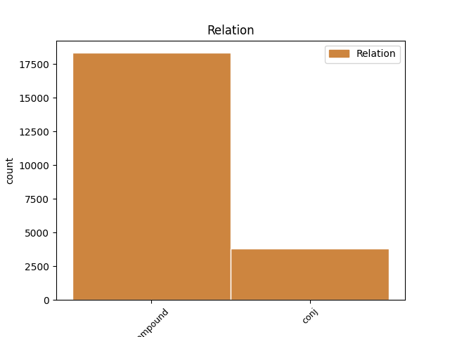
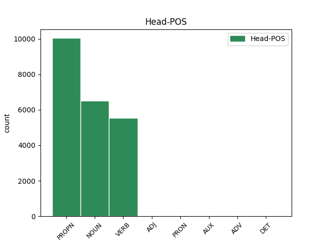
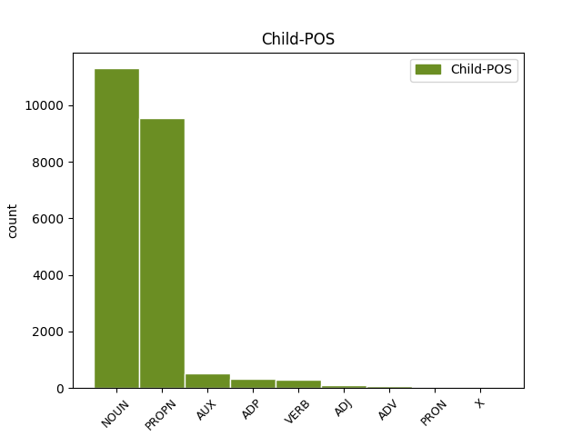

Distribution of features within this leaf



Agreement Rules sorted by frequency.
- When the dependent token is the compound(compound) of the head token, and the head token is PROPN
1 उन्होंने _ _ _ _ 0 _ _ _
2 यहां _ _ _ _ 0 _ _ _
3 वेटिकन _ _ _ _ 0 _ _ _
4 दूतावास _ _ _ _ 0 _ _ _
5 में _ _ _ _ 0 _ _ _
6 एक _ _ _ _ 0 _ _ _
7 शोक _ _ _ _ 0 _ _ _
8 पुस्तिका _ _ _ _ 0 _ _ _
9 पर _ _ _ _ 0 _ _ _
10 हस्ताक्षर _ _ _ _ 0 _ _ _
11 कर _ _ _ _ 0 _ _ _
12 पोप _ _ _ _ 0 _ _ _
13 जॉन _ _ _ _ 0 _ _ _
14 पॉल पॉल PROPN NNPC Case=Nom|Gender=Masc|Number=Sing|Person=3 15 compound _ ChunkId=NP6|ChunkType=child|Tam=0|Translit=pôla|Vib=0
15 द्वितीय द्वितीय PROPN NNP Case=Acc|Gender=Masc|Number=Sing|Person=3 0 _ _ _
16 के _ _ _ _ 0 _ _ _
17 निधन _ _ _ _ 0 _ _ _
18 पर _ _ _ _ 0 _ _ _
19 गहरा _ _ _ _ 0 _ _ _
20 दुख _ _ _ _ 0 _ _ _
21 प्रकट _ _ _ _ 0 _ _ _
22 किया _ _ _ _ 0 _ _ _
23 । _ _ _ _ 0 _ _ _
1 दलाई _ _ _ _ 0 _ _ _
2 लामा _ _ _ _ 0 _ _ _
3 ने _ _ _ _ 0 _ _ _
4 भारत _ _ _ _ 0 _ _ _
5 और _ _ _ _ 0 _ _ _
6 चीन _ _ _ _ 0 _ _ _
7 के _ _ _ _ 0 _ _ _
8 रिश्ते _ _ _ _ 0 _ _ _
9 में _ _ _ _ 0 _ _ _
10 आ _ _ _ _ 0 _ _ _
11 रहे _ _ _ _ 0 _ _ _
12 सुधार _ _ _ _ 0 _ _ _
13 की _ _ _ _ 0 _ _ _
14 भी _ _ _ _ 0 _ _ _
15 प्रशंसा प्रशंसा NOUN NN Case=Nom|Gender=Fem|Number=Sing|Person=3 16 compound _ ChunkId=NP6|ChunkType=head|Tam=0|Translit=praśaṁsā|Vib=0
16 की कर VERB VM Aspect=Perf|Gender=Fem|Number=Sing|VerbForm=Part|Voice=Act 0 _ _ _
17 । _ _ _ _ 0 _ _ _
1 उन्होंने _ _ _ _ 0 _ _ _
2 इसे _ _ _ _ 0 _ _ _
3 चीनियों _ _ _ _ 0 _ _ _
4 का _ _ _ _ 0 _ _ _
5 हृदय हृदय NOUN NNC Case=Nom|Gender=Masc|Number=Sing|Person=3 6 compound _ ChunkId=NP4|ChunkType=child|Tam=0|Translit=hr̥daya|Vib=0
6 परिवर्तन परिवर्तन NOUN NN Case=Nom|Gender=Masc|Number=Sing|Person=3 0 _ _ _
7 करार _ _ _ _ 0 _ _ _
8 दिया _ _ _ _ 0 _ _ _
9 । _ _ _ _ 0 _ _ _
1 उन्होंने _ _ _ _ 0 _ _ _
2 कहा _ _ _ _ 0 _ _ _
3 कि _ _ _ _ 0 _ _ _
4 भारत भारत PROPN NNP Case=Nom|Gender=Masc|Number=Sing|Person=3 0 _ _ _
5 और _ _ _ _ 0 _ _ _
6 चीन चीन PROPN NNP Case=Nom|Gender=Masc|Number=Sing|Person=3 4 conj _ ChunkId=NP3|ChunkType=head|Tam=0|Translit=cīna|Vib=0
7 सर्वाधिक _ _ _ _ 0 _ _ _
8 आबादी _ _ _ _ 0 _ _ _
9 वाले _ _ _ _ 0 _ _ _
10 देश _ _ _ _ 0 _ _ _
11 हैं _ _ _ _ 0 _ _ _
12 । _ _ _ _ 0 _ _ _
1 पार्टी _ _ _ _ 0 _ _ _
2 कार्यकर्ताओं कार्यकर्ता NOUN NN Case=Acc|Gender=Masc|Number=Plur|Person=3 0 _ _ _
3 और _ _ _ _ 0 _ _ _
4 नेताओं नेता NOUN NN Case=Acc|Gender=Masc|Number=Plur|Person=3 2 conj _ ChunkId=NP2|ChunkType=head|Tam=0|Translit=netāoṁ|Vib=0_ने
5 ने _ _ _ _ 0 _ _ _
6 गुटबाजी _ _ _ _ 0 _ _ _
7 को _ _ _ _ 0 _ _ _
8 भुला _ _ _ _ 0 _ _ _
9 कर _ _ _ _ 0 _ _ _
10 इस _ _ _ _ 0 _ _ _
11 कार्यक्रम _ _ _ _ 0 _ _ _
12 में _ _ _ _ 0 _ _ _
13 बढ़ _ _ _ _ 0 _ _ _
14 - _ _ _ _ 0 _ _ _
15 चढ़कर _ _ _ _ 0 _ _ _
16 हिस्सा _ _ _ _ 0 _ _ _
17 लिया _ _ _ _ 0 _ _ _
18 । _ _ _ _ 0 _ _ _
1 यूं _ _ _ _ 0 _ _ _
2 तो _ _ _ _ 0 _ _ _
3 दलाई _ _ _ _ 0 _ _ _
4 लामा _ _ _ _ 0 _ _ _
5 ने _ _ _ _ 0 _ _ _
6 वेन _ _ _ _ 0 _ _ _
7 जियाबाओ _ _ _ _ 0 _ _ _
8 को _ _ _ _ 0 _ _ _
9 एक _ _ _ _ 0 _ _ _
10 एकाधिकारवादी _ _ _ _ 0 _ _ _
11 देश _ _ _ _ 0 _ _ _
12 का _ _ _ _ 0 _ _ _
13 नेता _ _ _ _ 0 _ _ _
14 करार _ _ _ _ 0 _ _ _
15 दिया दे VERB VM Aspect=Perf|Gender=Masc|Number=Sing|VerbForm=Part|Voice=Act 0 _ _ _
16 , _ _ _ _ 0 _ _ _
17 लेकिन _ _ _ _ 0 _ _ _
18 उन्होंने _ _ _ _ 0 _ _ _
19 जियाबाओ _ _ _ _ 0 _ _ _
20 को _ _ _ _ 0 _ _ _
21 पूर्ववर्ती _ _ _ _ 0 _ _ _
22 चीनी _ _ _ _ 0 _ _ _
23 प्रधानमंत्रियों _ _ _ _ 0 _ _ _
24 की _ _ _ _ 0 _ _ _
25 तुलना _ _ _ _ 0 _ _ _
26 में _ _ _ _ 0 _ _ _
27 अधिक _ _ _ _ 0 _ _ _
28 व्यावहारिक _ _ _ _ 0 _ _ _
29 , _ _ _ _ 0 _ _ _
30 उदार _ _ _ _ 0 _ _ _
31 और _ _ _ _ 0 _ _ _
32 दूरदर्शी _ _ _ _ 0 _ _ _
33 नेता _ _ _ _ 0 _ _ _
34 भी _ _ _ _ 0 _ _ _
35 करार _ _ _ _ 0 _ _ _
36 दिया दे VERB VM Aspect=Perf|Gender=Masc|Number=Sing|VerbForm=Part|Voice=Act 15 conj _ ChunkId=VGF2|ChunkType=head|Stype=declarative|Tam=yA|Translit=diyā|Vib=या
37 । _ _ _ _ 0 _ _ _
1 अनुराग _ _ _ _ 0 _ _ _
2 भठेजा _ _ _ _ 0 _ _ _
3 ने _ _ _ _ 0 _ _ _
4 बताया _ _ _ _ 0 _ _ _
5 कि _ _ _ _ 0 _ _ _
6 याहू _ _ _ _ 0 _ _ _
7 और _ _ _ _ 0 _ _ _
8 अन्य _ _ _ _ 0 _ _ _
9 कंपनियों _ _ _ _ 0 _ _ _
10 ने _ _ _ _ 0 _ _ _
11 नए नया ADJ JJ Case=Acc|Gender=Masc|Number=Sing 0 _ _ _
12 - _ _ _ _ 0 _ _ _
13 नए नया ADJ RDP Case=Acc|Echo=Rdp|Gender=Masc|Number=Sing 11 compound _ AltTag=adj-ADJ|ChunkId=NP4|ChunkType=child|Translit=nae
14 वर्जन _ _ _ _ 0 _ _ _
15 के _ _ _ _ 0 _ _ _
16 मैसेंजर _ _ _ _ 0 _ _ _
17 उपलब्ध _ _ _ _ 0 _ _ _
18 करवाए _ _ _ _ 0 _ _ _
19 हैं _ _ _ _ 0 _ _ _
20 । _ _ _ _ 0 _ _ _
1 वामपंथियों _ _ _ _ 0 _ _ _
2 का _ _ _ _ 0 _ _ _
3 कहना _ _ _ _ 0 _ _ _
4 है _ _ _ _ 0 _ _ _
5 कि _ _ _ _ 0 _ _ _
6 ईरान _ _ _ _ 0 _ _ _
7 हमारा _ _ _ _ 0 _ _ _
8 पारंपरिक _ _ _ _ 0 _ _ _
9 मित्र _ _ _ _ 0 _ _ _
10 देश _ _ _ _ 0 _ _ _
11 है _ _ _ _ 0 _ _ _
12 और _ _ _ _ 0 _ _ _
13 मध्य _ _ _ _ 0 _ _ _
14 पूर्व पूर्व ADJ JJ Case=Acc|Gender=Masc|Number=Sing|Person=3 0 _ _ _
15 व _ _ _ _ 0 _ _ _
16 खाड़ी _ _ _ _ 0 _ _ _
17 के का ADP PSP AdpType=Post|Case=Acc|Gender=Masc|Number=Plur 14 conj _ ChunkId=NP6|ChunkType=child|Translit=ke
18 देशों _ _ _ _ 0 _ _ _
19 में _ _ _ _ 0 _ _ _
20 किसी _ _ _ _ 0 _ _ _
21 प्रकार _ _ _ _ 0 _ _ _
22 की _ _ _ _ 0 _ _ _
23 क्षेत्रीय _ _ _ _ 0 _ _ _
24 अस्थिरता _ _ _ _ 0 _ _ _
25 का _ _ _ _ 0 _ _ _
26 हमारे _ _ _ _ 0 _ _ _
27 देश _ _ _ _ 0 _ _ _
28 पर _ _ _ _ 0 _ _ _
29 असर _ _ _ _ 0 _ _ _
30 पड़ेगा _ _ _ _ 0 _ _ _
31 । _ _ _ _ 0 _ _ _
1 इससे _ _ _ _ 0 _ _ _
2 पहले _ _ _ _ 0 _ _ _
3 रिलायंस _ _ _ _ 0 _ _ _
4 समूह _ _ _ _ 0 _ _ _
5 की _ _ _ _ 0 _ _ _
6 सभी _ _ _ _ 0 _ _ _
7 कंपनियां _ _ _ _ 0 _ _ _
8 अपने अपना PRON PRP Case=Nom|Gender=Masc|PronType=Prs 0 _ _ _
9 - _ _ _ _ 0 _ _ _
10 अपने अपना PRON RDP Case=Acc|Echo=Rdp|Gender=Masc|PronType=Prs 8 compound _ AltTag=pn-PRON|ChunkId=NP4|ChunkType=child|Tam=0|Translit=apane|Vib=0
11 एकाउंट _ _ _ _ 0 _ _ _
12 पर _ _ _ _ 0 _ _ _
13 मुहर _ _ _ _ 0 _ _ _
14 लगाने _ _ _ _ 0 _ _ _
15 के _ _ _ _ 0 _ _ _
16 लिए _ _ _ _ 0 _ _ _
17 बैठक _ _ _ _ 0 _ _ _
18 कर _ _ _ _ 0 _ _ _
19 रही _ _ _ _ 0 _ _ _
20 हैं _ _ _ _ 0 _ _ _
21 । _ _ _ _ 0 _ _ _
1 दोनों _ _ _ _ 0 _ _ _
2 के _ _ _ _ 0 _ _ _
3 बीच _ _ _ _ 0 _ _ _
4 चली _ _ _ _ 0 _ _ _
5 एक _ _ _ _ 0 _ _ _
6 घंटे _ _ _ _ 0 _ _ _
7 की _ _ _ _ 0 _ _ _
8 बैठक _ _ _ _ 0 _ _ _
9 में _ _ _ _ 0 _ _ _
10 उन वह PRON PRP Case=Acc|Gender=Masc|Number=Sing|Person=3|Polite=Form|PronType=Prs 0 _ _ _
11 पर _ _ _ _ 0 _ _ _
12 व _ _ _ _ 0 _ _ _
13 उनके _ _ _ _ 0 _ _ _
14 परिवार परिवार NOUN NN Case=Acc|Gender=Masc|Number=Sing|Person=3 10 conj _ ChunkId=NP6|ChunkType=head|Tam=0|Translit=parivāra|Vib=0_पर
15 पर _ _ _ _ 0 _ _ _
16 हुए _ _ _ _ 0 _ _ _
17 हमलों _ _ _ _ 0 _ _ _
18 पर _ _ _ _ 0 _ _ _
19 भी _ _ _ _ 0 _ _ _
20 चर्चा _ _ _ _ 0 _ _ _
21 हुई _ _ _ _ 0 _ _ _
22 । _ _ _ _ 0 _ _ _
1 क्योंकि _ _ _ _ 0 _ _ _
2 अगर _ _ _ _ 0 _ _ _
3 कांग्रेस _ _ _ _ 0 _ _ _
4 तुरा _ _ _ _ 0 _ _ _
5 से _ _ _ _ 0 _ _ _
6 संगमा _ _ _ _ 0 _ _ _
7 को _ _ _ _ 0 _ _ _
8 समर्थन _ _ _ _ 0 _ _ _
9 नहीं _ _ _ _ 0 _ _ _
10 देती _ _ _ _ 0 _ _ _
11 है _ _ _ _ 0 _ _ _
12 तो _ _ _ _ 0 _ _ _
13 पवार _ _ _ _ 0 _ _ _
14 इस _ _ _ _ 0 _ _ _
15 बात _ _ _ _ 0 _ _ _
16 को _ _ _ _ 0 _ _ _
17 सहयोगी _ _ _ _ 0 _ _ _
18 दलों _ _ _ _ 0 _ _ _
19 के _ _ _ _ 0 _ _ _
20 बीच _ _ _ _ 0 _ _ _
21 ले _ _ _ _ 0 _ _ _
22 जाएंगे जा AUX VAUX Gender=Masc|Mood=Ind|Number=Sing|Person=3|Polite=Form|Tense=Fut|VerbForm=Fin 0 _ _ _
23 और _ _ _ _ 0 _ _ _
24 इसका _ _ _ _ 0 _ _ _
25 सीधा _ _ _ _ 0 _ _ _
26 फायदा _ _ _ _ 0 _ _ _
27 एनसीपी _ _ _ _ 0 _ _ _
28 को _ _ _ _ 0 _ _ _
29 होगा हो VERB VM Gender=Masc|Mood=Ind|Number=Sing|Person=3|Tense=Fut|VerbForm=Fin|Voice=Act 22 conj _ ChunkId=VGF3|ChunkType=head|Stype=declarative|Tam=gA|Translit=hogā|Vib=गा
30 । _ _ _ _ 0 _ _ _
1 सम्मेलन _ _ _ _ 0 _ _ _
2 में _ _ _ _ 0 _ _ _
3 आए _ _ _ _ 0 _ _ _
4 विभिन्न _ _ _ _ 0 _ _ _
5 राज्यों _ _ _ _ 0 _ _ _
6 के _ _ _ _ 0 _ _ _
7 प्रतिनिधियों _ _ _ _ 0 _ _ _
8 ने _ _ _ _ 0 _ _ _
9 कहा _ _ _ _ 0 _ _ _
10 कि _ _ _ _ 0 _ _ _
11 दूर _ _ _ _ 0 _ _ _
12 - _ _ _ _ 0 _ _ _
13 दराज दराज ADV NST AdpType=Post|Case=Acc|Gender=Masc|Number=Sing|Person=3 0 _ _ _
14 या _ _ _ _ 0 _ _ _
15 हाशिए हाशिया NOUN NN Case=Acc|Gender=Masc|Number=Sing|Person=3 13 conj _ ChunkId=NP5|ChunkType=head|Tam=0|Translit=hāśie|Vib=0_का
16 के _ _ _ _ 0 _ _ _
17 गाँवों _ _ _ _ 0 _ _ _
18 में _ _ _ _ 0 _ _ _
19 रहने _ _ _ _ 0 _ _ _
20 वाले _ _ _ _ 0 _ _ _
21 बुजुर्गो _ _ _ _ 0 _ _ _
22 के _ _ _ _ 0 _ _ _
23 लिए _ _ _ _ 0 _ _ _
24 जिला _ _ _ _ 0 _ _ _
25 केंद्र _ _ _ _ 0 _ _ _
26 तक _ _ _ _ 0 _ _ _
27 आना _ _ _ _ 0 _ _ _
28 व्यवहारिक _ _ _ _ 0 _ _ _
29 रूप _ _ _ _ 0 _ _ _
30 से _ _ _ _ 0 _ _ _
31 संभव _ _ _ _ 0 _ _ _
32 नहीं _ _ _ _ 0 _ _ _
33 होगा _ _ _ _ 0 _ _ _
34 । _ _ _ _ 0 _ _ _
1 कामथ _ _ _ _ 0 _ _ _
2 द्वारा _ _ _ _ 0 _ _ _
3 सुझाए _ _ _ _ 0 _ _ _
4 गए _ _ _ _ 0 _ _ _
5 दूसरे _ _ _ _ 0 _ _ _
6 विकल्प _ _ _ _ 0 _ _ _
7 के _ _ _ _ 0 _ _ _
8 तहत _ _ _ _ 0 _ _ _
9 दोनों _ _ _ _ 0 _ _ _
10 भाइयों _ _ _ _ 0 _ _ _
11 को _ _ _ _ 0 _ _ _
12 मां _ _ _ _ 0 _ _ _
13 की _ _ _ _ 0 _ _ _
14 सहमति _ _ _ _ 0 _ _ _
15 से _ _ _ _ 0 _ _ _
16 परिवार _ _ _ _ 0 _ _ _
17 की _ _ _ _ 0 _ _ _
18 होल्डिंग _ _ _ _ 0 _ _ _
19 में _ _ _ _ 0 _ _ _
20 आधा आधा DET QF Gender=Masc|Number=Sing|PronType=Ind 0 _ _ _
21 - _ _ _ _ 0 _ _ _
22 आधा आधा X RDP Gender=Masc|Number=Sing 20 compound _ ChunkId=NP8|ChunkType=child|Translit=ādhā
23 हिस्सा _ _ _ _ 0 _ _ _
24 मिले _ _ _ _ 0 _ _ _
25 । _ _ _ _ 0 _ _ _
Disagree Examples:
1 जिसमें _ _ _ _ 0 _ _ _
2 चार _ _ _ _ 0 _ _ _
3 मेहराबें _ _ _ _ 0 _ _ _
4 हैं _ _ _ _ 0 _ _ _
5 और _ _ _ _ 0 _ _ _
6 मुख्य _ _ _ _ 0 _ _ _
7 प्रार्थना प्रार्थना NOUN NNC Case=Nom|Gender=Fem|Number=Sing|Person=3 8 compound _ ChunkId=NP3|ChunkType=child|Tam=0|Translit=prārthanā|Vib=0
8 हॉल हॉल NOUN NN Case=Acc|Gender=Masc|Number=Sing|Person=3 0 _ _ _
9 में _ _ _ _ 0 _ _ _
10 जाने _ _ _ _ 0 _ _ _
11 के _ _ _ _ 0 _ _ _
12 लिए _ _ _ _ 0 _ _ _
13 9 _ _ _ _ 0 _ _ _
14 प्रवेश _ _ _ _ 0 _ _ _
15 द्वार _ _ _ _ 0 _ _ _
16 हैं _ _ _ _ 0 _ _ _
17 । _ _ _ _ 0 _ _ _
1 मुख्य _ _ _ _ 0 _ _ _
2 रूप _ _ _ _ 0 _ _ _
3 से _ _ _ _ 0 _ _ _
4 यह _ _ _ _ 0 _ _ _
5 प्रदर्शन प्रदर्शन NOUN NNC Case=Nom|Gender=Masc|Number=Sing|Person=3 6 compound _ ChunkId=NP3|ChunkType=child|Tam=0|Translit=pradarśana|Vib=0
6 कला कला NOUN NN Case=Acc|Gender=Fem|Number=Sing|Person=3 0 _ _ _
7 और _ _ _ _ 0 _ _ _
8 दृश्य _ _ _ _ 0 _ _ _
9 कला _ _ _ _ 0 _ _ _
10 का _ _ _ _ 0 _ _ _
11 केंद्र _ _ _ _ 0 _ _ _
12 है _ _ _ _ 0 _ _ _
13 । _ _ _ _ 0 _ _ _
1 मुख्य _ _ _ _ 0 _ _ _
2 रूप _ _ _ _ 0 _ _ _
3 से _ _ _ _ 0 _ _ _
4 यह _ _ _ _ 0 _ _ _
5 प्रदर्शन _ _ _ _ 0 _ _ _
6 कला _ _ _ _ 0 _ _ _
7 और _ _ _ _ 0 _ _ _
8 दृश्य दृश्य NOUN NNC Case=Nom|Gender=Masc|Number=Sing|Person=3 9 compound _ ChunkId=NP4|ChunkType=child|Tam=0|Translit=dr̥śya|Vib=0
9 कला कला NOUN NN Case=Acc|Gender=Fem|Number=Sing|Person=3 0 _ _ _
10 का _ _ _ _ 0 _ _ _
11 केंद्र _ _ _ _ 0 _ _ _
12 है _ _ _ _ 0 _ _ _
13 । _ _ _ _ 0 _ _ _
1 मुख्य _ _ _ _ 0 _ _ _
2 रूप _ _ _ _ 0 _ _ _
3 से _ _ _ _ 0 _ _ _
4 यह _ _ _ _ 0 _ _ _
5 प्रदर्शन _ _ _ _ 0 _ _ _
6 कला कला NOUN NN Case=Acc|Gender=Fem|Number=Sing|Person=3 0 _ _ _
7 और _ _ _ _ 0 _ _ _
8 दृश्य _ _ _ _ 0 _ _ _
9 कला _ _ _ _ 0 _ _ _
10 का का ADP PSP AdpType=Post|Case=Nom|Gender=Masc|Number=Sing 6 conj _ ChunkId=NP4|ChunkType=child|Translit=kā
11 केंद्र _ _ _ _ 0 _ _ _
12 है _ _ _ _ 0 _ _ _
13 । _ _ _ _ 0 _ _ _
1 यहीं _ _ _ _ 0 _ _ _
2 पर _ _ _ _ 0 _ _ _
3 एक _ _ _ _ 0 _ _ _
4 कला कला NOUN NNC Case=Nom|Gender=Fem|Number=Sing|Person=3 5 compound _ ChunkId=NP2|ChunkType=child|Tam=0|Translit=kalā|Vib=0
5 संग्रहालय संग्रहालय NOUN NN Case=Nom|Gender=Masc|Number=Sing|Person=3 0 _ _ _
6 , _ _ _ _ 0 _ _ _
7 कला _ _ _ _ 0 _ _ _
8 दीर्घा _ _ _ _ 0 _ _ _
9 , _ _ _ _ 0 _ _ _
10 फाइन _ _ _ _ 0 _ _ _
11 आर्ट _ _ _ _ 0 _ _ _
12 के _ _ _ _ 0 _ _ _
13 लिए _ _ _ _ 0 _ _ _
14 कार्यशाला _ _ _ _ 0 _ _ _
15 , _ _ _ _ 0 _ _ _
16 एक _ _ _ _ 0 _ _ _
17 थिएटर _ _ _ _ 0 _ _ _
18 , _ _ _ _ 0 _ _ _
19 अंतरंग _ _ _ _ 0 _ _ _
20 और _ _ _ _ 0 _ _ _
21 बहिरंग _ _ _ _ 0 _ _ _
22 ऑडिटोरियम _ _ _ _ 0 _ _ _
23 , _ _ _ _ 0 _ _ _
24 रिहर्सल _ _ _ _ 0 _ _ _
25 कक्ष _ _ _ _ 0 _ _ _
26 , _ _ _ _ 0 _ _ _
27 भारतीय _ _ _ _ 0 _ _ _
28 कविताओं _ _ _ _ 0 _ _ _
29 का _ _ _ _ 0 _ _ _
30 पुस्तकालय _ _ _ _ 0 _ _ _
31 , _ _ _ _ 0 _ _ _
32 शास्त्रीय _ _ _ _ 0 _ _ _
33 और _ _ _ _ 0 _ _ _
34 लोक _ _ _ _ 0 _ _ _
35 संगीत _ _ _ _ 0 _ _ _
36 संग्रहालय _ _ _ _ 0 _ _ _
37 भी _ _ _ _ 0 _ _ _
38 हैं _ _ _ _ 0 _ _ _
39 । _ _ _ _ 0 _ _ _